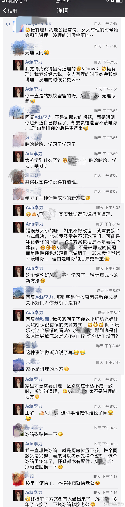

#创业#每次看到这句话“企业的价值，等于企业在生命周期内（长期）可以创造的自由现金流的折现值总和。”再琢磨下是谁说出来，以及谁在实践，就会多一些体会。『投资人说』贝佐斯：把所有资源 all in 在不变的事物上
圈里发个八卦，讨论还是蛮有意思的。评论看截图。—-姣姣爸爸承包了晚餐里一个菜，在厨房时间长些，看到我三次都没关好冰箱门，他提醒嗓门一次比一次大。第三次我不虚心承认错误了，说：“你的指责带来的损失，可能比冰箱门没关好费些电还要大些”姣姣爸爸：“什么损失？”我：“你说我，我就很不开心，情绪上有损失。如果找茬，稍后逮着机会再把你吼一顿，你也会有损失”姣姣爸爸：“…”
案例发出来，是想说明，“指出错误，对方改正”并不是唯一解决方案。执着于唯一，大概率会不如意。//@魔法师M:……连您这么理智的美女都这样……有没有讲理的女人呢@Ada李力:圈里发个八卦，讨论还是蛮有意思的。评论看截图。—-姣姣爸爸承包了晚餐里一个菜，在厨房时间长些，看到我三次都没关好冰箱门，他提醒嗓门一次比一次大。第三次我不虚心承认错误了，说：“你的指责带来的损失，可能比冰箱门没关好费些电还要大些”姣姣爸爸：“什么损失？”我：“你说我，我就很不开心，情绪上有损失。如果找茬，稍后逮着机会再把你吼一顿，你也会有损失”姣姣爸爸：“…”
是指宽带上网的覆盖率吧？网络覆盖率并不低，而且不影响接受任何信息。@闫跃龙:美国是互联网大国，但是在互联网接入覆盖和网速方面却落后于其他发达国家。据外媒最新消息，微软公司进行的研究后发现，美国网络接入很糟糕，1.7亿人至今没用上宽带上网。资料显示，美国去年统计的人口数为3.257亿人。换言之，美国一半人口还没用上宽带。这回更是深刻知道为什么特朗普能当选了…
特朗普作风是这样的，跟你热情拥抱说：“We are friends”，转身就吩咐手下人：“去，给那人一个嘴巴子！”这位总统最绝的还是：他坚信自己做事的正义性。别人吃亏上当，他的态度是：“我很同情你。但是玩这个游戏，我赢了，我是严格按照规则来玩的哦”中国文化里很少见到这类人，很不适应的感觉。
嗯，他这样的人能被选上当总统，倒是个琢磨起来有意思的事情。//@乡下宁宁:美国文化里也很少这种人，他这种是病态人格，美国的很多精神病学家联名诊断的。@Ada李力:特朗普作风是这样的，跟你热情拥抱说：“We are friends”，转身就吩咐手下人：“去，给那人一个嘴巴子！”这位总统最绝的还是：他坚信自己做事的正义性。别人吃亏上当，他的态度是：“我很同情你。但是玩这个游戏，我赢了，我是严格按照规则来玩的哦”中国文化里很少见到这类人，很不适应的感觉。
好奇，程序员里拥川比例是多少？//@老赵: 他当上总统就是因为最右那些精神病学家这类人让人烦啊 //@Ada李力:嗯，他这样的人能被选上当总统，倒是个琢磨起来有意思的事情。//@乡下宁宁:美国文化里也很少这种人，他这种是病态人格，美国的很多精神病学家联名诊断的。@Ada李力:特朗普作风是这样的，跟你热情拥抱说：“We are friends”，转身就吩咐手下人：“去，给那人一个嘴巴子！”这位总统最绝的还是：他坚信自己做事的正义性。别人吃亏上当，他的态度是：“我很同情你。但是玩这个游戏，我赢了，我是严格按照规则来玩的哦”中国文化里很少见到这类人，很不适应的感觉。
#创业#今天看到市场监督总局对电子商务放了一马，个体工商户可以用家庭地址登记。注册为公司的电子商务从业者还享受不到这个优惠，还是必须用商业地址注册公司，对初创公司来说，成本不低。之前工商一阵查，很多提供便宜办公注册地址的服务都没有了，现在这是又要放开的节奏？政府公文链接： 市场监管总局关于做好电子商务经营者登记工作的意见
 贝佐斯：把所有资源 all in 在不变的事物上
贝佐斯：把所有资源 all in 在不变的事物上